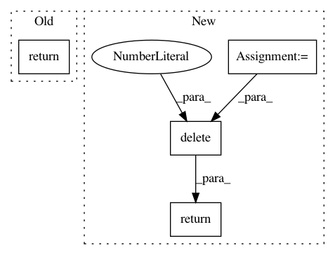

9f32d03597f581a93e8a0e5c7a38253858d25997,deepplantphenomics/deepplantpheno.py,DPPModel,forwardPassWithFileInputs,#DPPModel#Any#,508
Before Change
xx = self.__session.run(x_pred)
total_outputs.append(xx)
return total_outputs
def __batchMeanL2Loss(self, x):
agg = tf.map_fn(lambda ex: tf.nn.l2_loss(ex), x)
mean = tf.reduce_mean(agg)
After Change
for i in range(num_batches):
xx = self.__session.run(x_pred)
total_outputs = np.append(total_outputs, xx, axis=0)
// delete the complete matrix with the weird first row deleted
return np.delete(total_outputs, 0, 0)
def __batchMeanL2Loss(self, x):
agg = tf.map_fn(lambda ex: tf.nn.l2_loss(ex), x)
mean = tf.reduce_mean(agg)
In pattern: SUPERPATTERN
Frequency: 3
Non-data size: 4
Instances
Project Name: p2irc/deepplantphenomics
Commit Name: 9f32d03597f581a93e8a0e5c7a38253858d25997
Time: 2017-02-01
Author: jubbens@gmail.com
File Name: deepplantphenomics/deepplantpheno.py
Class Name: DPPModel
Method Name: forwardPassWithFileInputs
Project Name: p2irc/deepplantphenomics
Commit Name: 2b0783f36d72c2b262e90eeb52ceb81b0d5b9d62
Time: 2017-02-02
Author: jubbens@gmail.com
File Name: deepplantphenomics/deepplantpheno.py
Class Name: DPPModel
Method Name: forwardPassWithFileInputs
Project Name: EpistasisLab/tpot
Commit Name: 929ece0faa71cf615f05617884b962e08a164377
Time: 2016-08-02
Author: supacoofoo@gmail.com
File Name: tpot/operators/selectors/base.py
Class Name: Selector
Method Name: _fit_mask